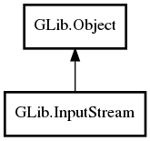

InputStream
Object Hierarchy:

Description:
public abstract class InputStream :
Object
Namespace: GLib
Package: gio-2.0
Content:
Creation methods:
Methods:
- public void clear_pending ()
- public abstract bool close (Cancellable? cancellable = null) throws IOError
- public virtual async bool close_async (int io_priority = DEFAULT, Cancellable? cancellable = null) throws IOError
- public bool has_pending ()
- public bool is_closed ()
- public abstract ssize_t read (uint8[] buffer, Cancellable? cancellable = null) throws IOError
- public bool read_all (uint8[] buffer, out size_t bytes_read, Cancellable? cancellable = null) throws IOError
- public virtual async ssize_t read_async (uint8[] buffer, int io_priority = DEFAULT, Cancellable? cancellable = null) throws IOError
- public Bytes read_bytes (size_t count, Cancellable? cancellable = null) throws Error
- public async Bytes read_bytes_async (size_t count, int io_priority = DEFAULT, Cancellable? cancellable = null) throws Error
- public bool set_pending () throws Error
- public virtual ssize_t skip (size_t count, Cancellable? cancellable = null) throws IOError
- public virtual async ssize_t skip_async (size_t count, int io_priority = DEFAULT, Cancellable? cancellable = null) throws IOError